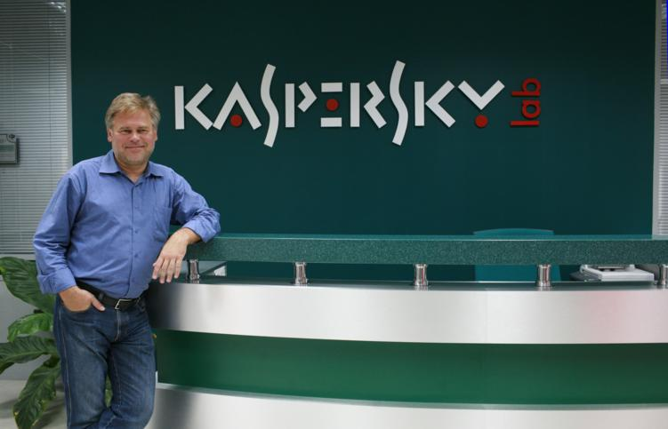

- Образование: В 1987 году Касперский окончил Высшую школу КГБ по специальности инженер-математик.
- Начало работы: Изучать вирусы он начал после заражения своего компьютера вирусом «Cascade», что стало толчком к разработке антивирусных программ.
- История бренда: После работы в «КАМИ» в 1997 году «Лаборатория Касперского» стала самостоятельной компанией.
- Ранний успех: Программа AVP, выпущенная в 1994 году, стала победителем международного тестирования антивирусного ПО в Гамбурге, что способствовало её международному признанию.
- Круглосуточная работа: Компания работает в круглосуточном режиме, а сотрудники постоянно на чеку.
- «Щекотливые» темы: Касперского часто путали с хакером Крисом Касперским, что создавало проблемы для PR-службы «Лаборатории».
- Личные интересы: Евгений Касперский увлекается рыбалкой, горными лыжами и фотографией.
- Кубик Рубика: Касперский до сих пор возит с собой кубик Рубика.
- Влияние: Евгений Касперский — член Организации исследователей компьютерных вирусов (CARO) и основатель конференции Virus Bulletin, которая является центральным событием в антивирусной индустрии.
